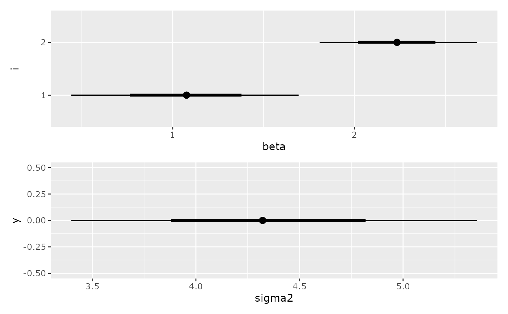

Estimate a linear regression model
Usage
estimate_lm(y, ...)
# Default S3 method
estimate_lm(y, x, data, ...)
# S3 method for class 'formula'
estimate_lm(y, data, ...)Examples
post <- estimate_lm(Petal.Length ~ Petal.Width, data = iris)
summary(post)
#>
#> Iterations = 1:1000
#> Thinning interval = 1
#> Number of chains = 1
#> Sample size per chain = 1000
#>
#> 1. Empirical mean and standard deviation for each variable,
#> plus standard error of the mean:
#>
#> Mean SD Naive SE Time-series SE
#> beta[1] 1.072 0.3230 0.010213 0.010213
#> beta[2] 2.233 0.2200 0.006958 0.006958
#> sigma2 4.344 0.5001 0.015814 0.015814
#>
#> 2. Quantiles for each variable:
#>
#> 2.5% 25% 50% 75% 97.5%
#> beta[1] 0.4419 0.8642 1.076 1.297 1.692
#> beta[2] 1.8081 2.0890 2.234 2.385 2.674
#> sigma2 3.3982 3.9912 4.322 4.679 5.357
#>
plot(post)
#> Warning: `aes_string()` was deprecated in ggplot2 3.0.0.
#> ℹ Please use tidy evaluation idioms with `aes()`.
#> ℹ See also `vignette("ggplot2-in-packages")` for more information.
#> ℹ The deprecated feature was likely used in the iNZightBayes package.
#> Please report the issue at
#> <https://github.com/iNZightVIT/iNZightBayes/issues>.
